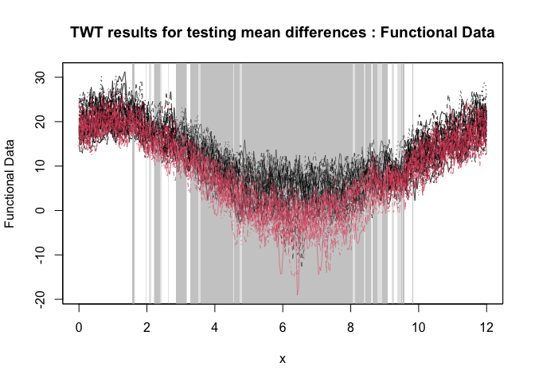

The goal of fdatest is to implement various statistical methods for domain selection in functional data analysis, that is selecting a subset of the domain where the difference between two populations is significant. The package is based on the paper by Abramowicz et al. (2022) and Pini & Vantini (2017).
Installation
You can install the package from CRAN with:
install.packages("fdatest")Alternatively, You can install the development version of fdatest from GitHub with:
# install.packages("pak")
pak::pak("permaverse/fdatest")Example
This is a basic example which shows you how to solve a common problem:
library(fdatest)
# Performing the TWT for two populations on the NASA temperatures data set
withr::with_seed(1234, {
out <- TWT2(NASAtemp$paris, NASAtemp$milan)
})
#> [1] "Threshold-wise tests"
# Plotting the results of the TWT
plot(
out,
xrange = c(0, 12),
main = 'TWT results for testing mean differences'
)